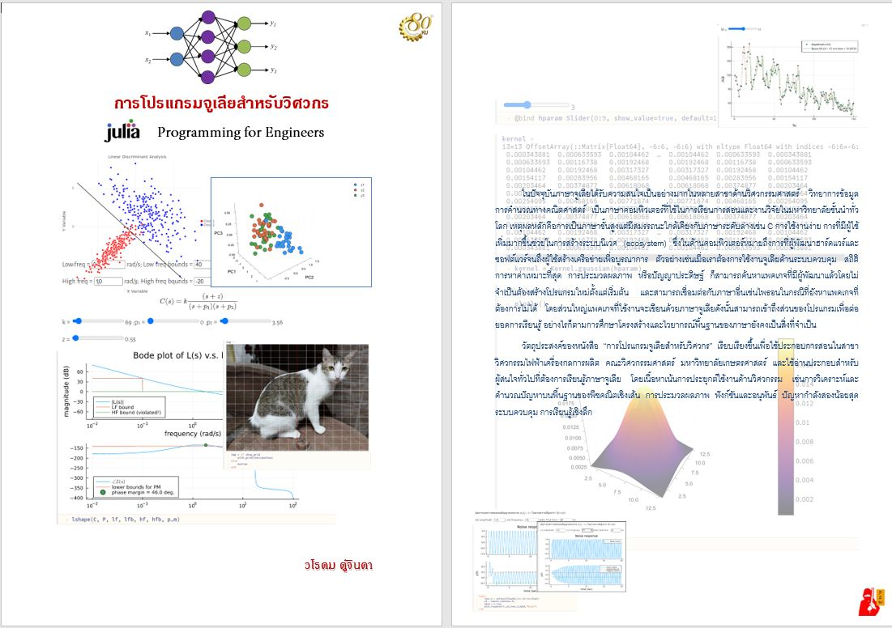

การโปรแกรมจูเลียสำหรับวิศวกร
Julia Progamming for Engineers

ในปัจจุบันภาษาจูเลียได้รับความสนใจเป็นอย่างมากโดยเฉพาะสาขาในด้านวิศวกรรมศาสตร์ วิทยาการข้อมูล การคำนวณทางคณิตศาสตร์
เป็นภาษาคอมพิวเตอร์ที่ใช้ในการเรียนการสอนและงานวิจัยในมหาวิทยาลัยชั้นนำทั่วโลก เหตุผลหลักคือการเป็นภาษาขั้นสูงแต่มีสมรรถนะใกล้เคียง
กับภาษาระดับล่างเช่น C การใช้งานง่าย การที่มีผู้ใช้เพิ่มมากขึ้นช่วยสร้างระบบนิเวศ (ecosystem) ซึ่งในด้านคอมพิวเตอร์หมายถึงการที่ผู้พัฒนา
ฮาร์ดแวร์และซอฟต์แวร์จนถึงผู้ใช้สร้างเครือข่ายเพื่อบูรณาการ ตัวอย่างเช่นเมื่อเราต้องการใช้งานจูเลียด้านระบบควบคุม สถิติ การหาค่าเหมาะที่สุด
การประมวลผลภาพ หรือปัญญาประดิษฐ์ ก็สามารถค้นหาแพคเกจที่มีผู้พัฒนาแล้วโดยไม่จำเป็นต้องสร้างโปรแกรมใหม่ตั้งแต่เริ่มต้น
และสามารถเชื่อมต่อกับภาษาอื่นเช่นไพธอนในกรณีที่ยังหาแพคเกจที่ต้องการไม่ได้ โดยส่วนใหญ่แพคเกจที่ใช้งานจะเขียนด้วยภาษาจูเลียดังนั้นสามารถ
เข้าถึงส่วนของโปรแกรมเพื่อต่อยอดการเรียนรู้ อย่างไรก็ตามการศึกษาโครงสร้างและไวยากรณ์พื้นฐานของภาษายังคงเป็นสิ่งที่จำเป็น
วัตถุประสงค์ของหนังสือ “การโปรแกรมจูเลียสำหรับวิศวกร” เรียบเรียงขึ้นเพื่อใช้ประกอบการสอนในสาขาวิศวกรรมไฟฟ้าเครื่องกลการผลิต
คณะวิศวกรรมศาสตร์ มหาวิทยาลัยเกษตรศาสตร์ และใช้อ่านประกอบสำหรับผู้สนใจทั่วไปที่ต้องการเรียนรู้ภาษาจูเลีย
โดยเนื้อหาเน้นการประยุกต์ใช้งานด้านวิศวกรรม เช่นการวิเคราะห์และคำนวณปัญหาบนพื้นฐานของพีชคณิตเชิงเส้น การประมวลผลภาพ ฟังก์ชันและอนุพันธ์ ปัญหากำลังสองน้อยสุด ระบบควบคุม และการเรียนรู้เชิงลึก
การทดสอบโปรแกรมในหนังสือสามารถทำได้บนสมุดบันทึกจูปิเตอร์หรือพลูโต ซึ่งเป็นแนวทางที่ได้รับความนิยมด้านการสอน วิจัย และการนำเสนอผลงานในปัจจุบัน
การใช้งานจูเลียเบื้องต้น
พื้นฐานพีชคณิตเชิงเส้น
ค่าและเวกเตอร์ลักษณะเฉพาะ
การประมวลผลภาพ
ฟังก์ชันและการหาอนุพันธ์อัตโนมัติ
วิธีกำลังสองน้อยสุด
ระบบควบคุม
การเรียนรู้เชิงลึก
สมุดบันทึกพลูโต
วีดีโอ